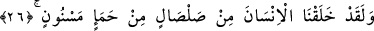
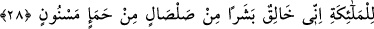
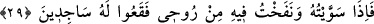
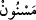

İNSANIN YARADILIŞI
26. Andolsun Biz insanı, kuru bir çamurdan, şekillenmiş kara balçıktan yarattık.
27. Cinleri de daha önce zehirli ateşten yaratmıştık.
28. Hani Rabbin meleklere demişti ki: “Ben kupkuru bir çamurdan, şekillenmiş
kara balçıktan bir insan yaratacağım.”
29. “Ona şekil verdiğim ve ona rûhumdan üflediğim zaman, siz hemen onun için
secdeye kapanın!”
30. Meleklerin hepsi de hemen secde ettiler.
31. Fakat İblis hâriç! O, secde edenlerle berâber olmaktan kaçındı.
“Andolsun Biz insanı” insan nev’ini, aslını ve ilk ferdini bu nevin tüm ferdlerinin
yaratılışını icmâlî olarak içine alacak şekilde eşsiz bir yaratılışla, vurulduğu zaman ses
çıkaran pişirilmemiş “kuru bir çamurdan” -bu çamur piştiği, yâni ateşe tutulduğu
zaman ‘el-fehhâr’ adını alır- “şekillenmiş kara balçıktan” yâni, suyla çok kaldığından
ötürü rengi değişip kararmış bir topraktan “yarattık.”
“
Mesnûn”, havuz ve ırmak dibinde olan ve pis pis kokan balçık gibi suda çok
durmak sebebiyle kötü koku tutmuş demektir. Ya da ‘sûret verilmiş balçık’ mânâsında
olabileceği gibi, ‘dökülmüş balcık’ mânâsına da gelebilir. O zaman ‘insan bedeni
şeklinde içi boş bırakılmış balçık’ mânâsında olmuş olur. Nitekim kurşun, bakır ve
benzerleri gibi eritilebilir mâdenlerden içi boş kalıplar dökülebilmektedir. Bir bakıma
Allah Teâlâ, balçığın içini boş bırakarak bununla içinde bir şey bulunmayan bir insan
kalıbı ortaya koymuş (tasvîr) ve bu kalıp kuruyup da vurulduğu zaman ses verir
olmuştur. Cenab-ı Hak daha sonra bu kalıbı bir başka bir cevhere büründürmüştür.
“Yaratanların en güzeli olan Allah ne kadar yücedir!” (el-Mü’minûn, 23/14)
Kâşifî der ki: “Tibyân sâhibi şöyle der: “Hak Sübhânehû ve Teâlâ, Âdem (a.s.)’ı
topraktan yarattı. Şöyle ki çamur olana kadar toprağın üzerine su yağdırdı. Bir müddet
geçtikten sonra kara balçık oldu. İşte o kara balçıktan insanın sûretini yarattı, tasvir